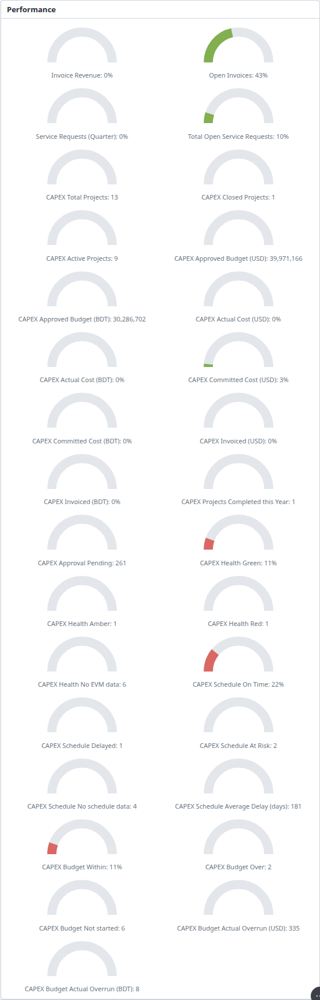
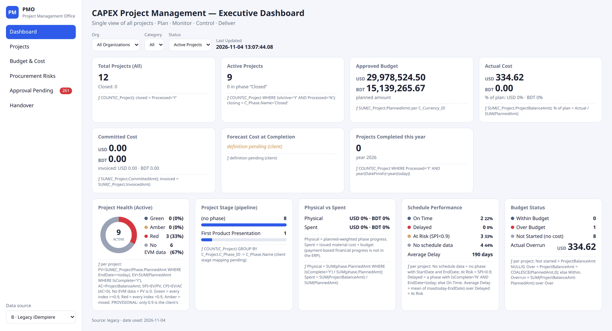
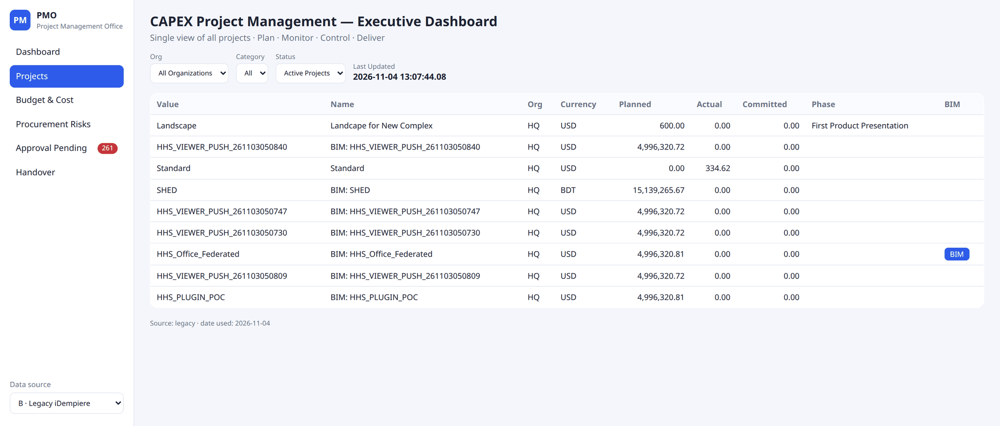
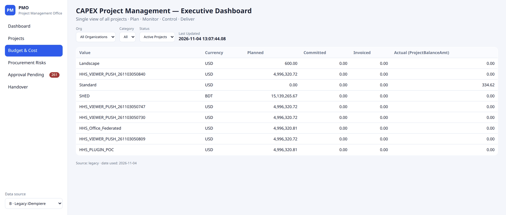
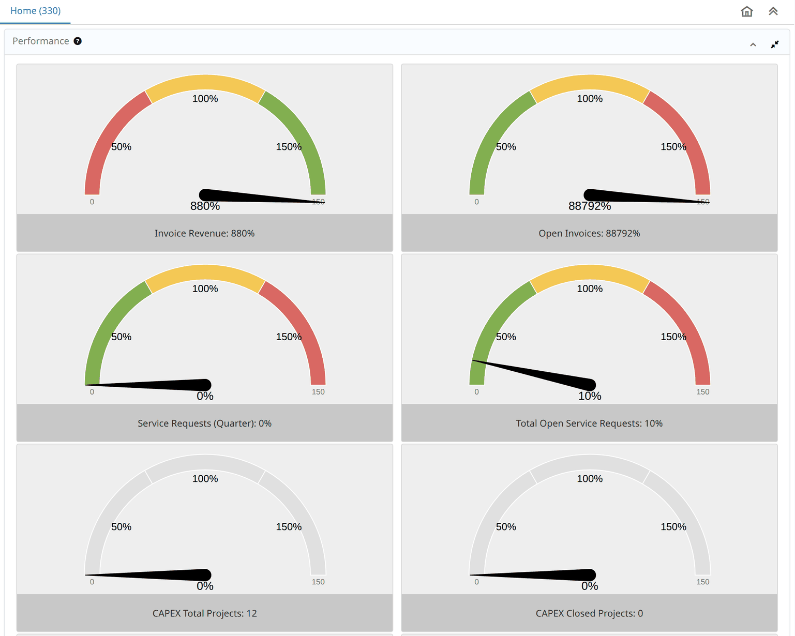
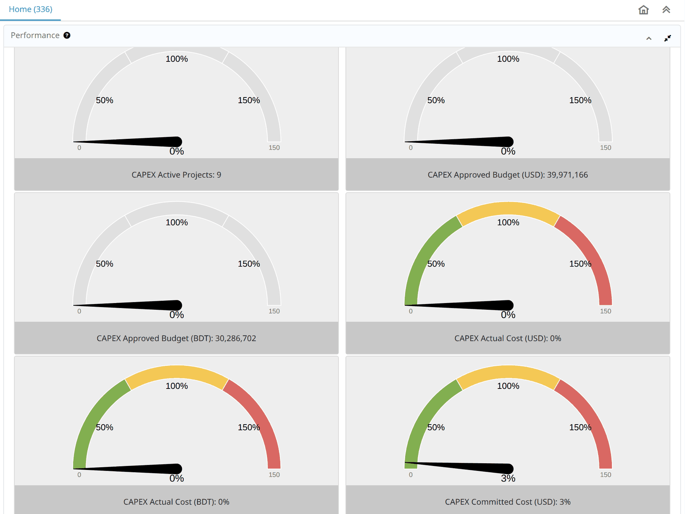
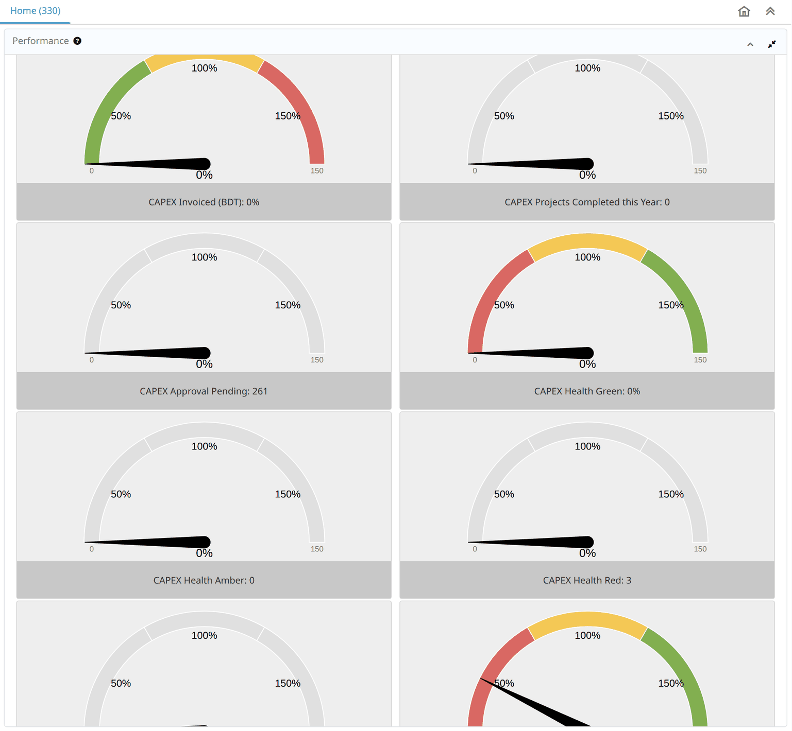
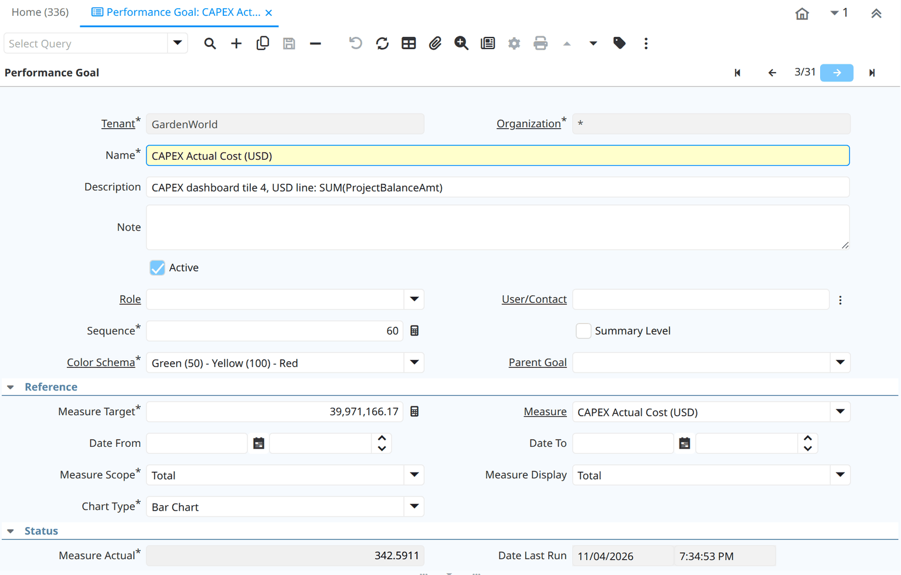
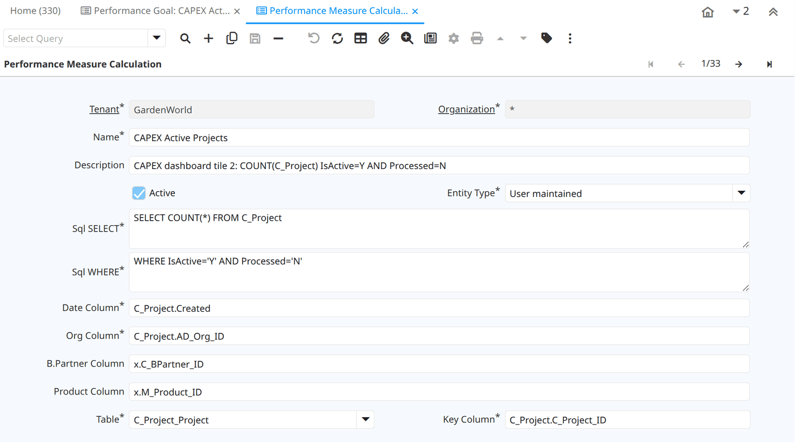
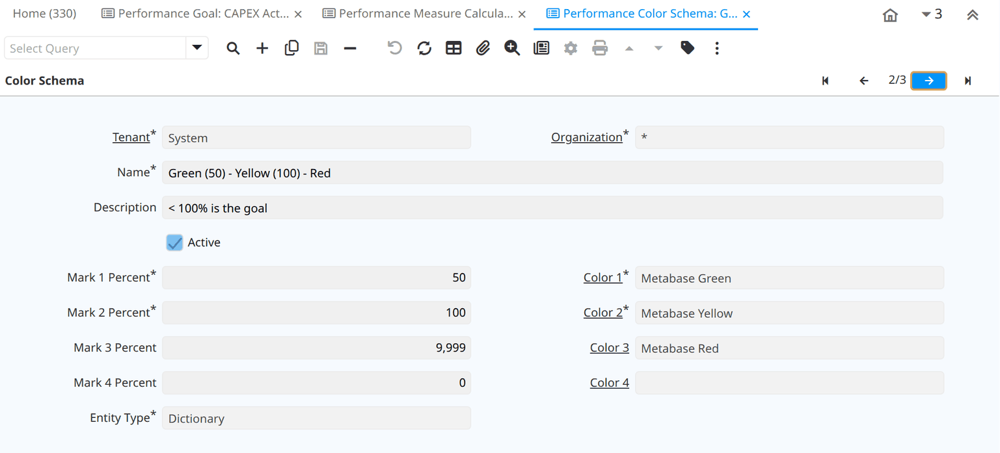

CAPEX Dashboard — Guide for iDempiere Users¶
⚠ DEMONSTRATOR — NOT OFFICIAL. Every screenshot and figure comes from a local GardenWorld test server (iDempiere 13) holding test projects, some of them repeat test runs. Treat every number as a sample (
SAMPLE — NOT OFFICIAL). The health and schedule rules are provisional until a client confirms them.
What this is. One set of project and capital-spending figures from your iDempiere, in three places:
- The dashboard page: a full executive page in a browser. It reads your iDempiere and writes nothing back.
- The Performance panel on your iDempiere Home tab: the same figures as ordinary Performance Goals, which you change in the stock windows.
- The Performance panel on the twin's Home tab: the same goals in Kernel-ERP, the SQLite twin of iDempiere that runs in a browser.
What it changes on your iDempiere: no change to iDempiere's code or tables. The dashboard needs only read-only setup data. Sending a Project Order from a BIM model into iDempiere is a separate thing: that is one standard plugin.
Who reads what. Project manager: The dashboard page, The Home tab and What moves the numbers. Administrator: Changing it and Installing it. Everyone: Three places, What it does not do yet and Troubleshooting.
Three places, one set of figures¶
These are different screens over the same kind of rows. They are not one HTML page shown three times.
| Dashboard page | iDempiere Home tab | Twin Home tab | |
|---|---|---|---|
| What you see | Seven tiles, five panels, project lists | Performance dials, one per goal | The same dials as iDempiere, on purpose |
| What defines the figures | Formulas in code (capex/tiles.js) |
PA_Goal and PA_Measure rows |
The same rows |
| What calculates them | The page, in the browser | iDempiere | The twin's goal engine, running the same SQL |
| Where its data comes from | A file written by a small job | Your iDempiere | A copy of your iDempiere's rows, in the browser |
| Change a formula without code | No | Yes, in the stock windows | Yes, in the same stock windows |
| Change the look without code | No | No | No |
Rich or editable: today you choose¶
A goal is one number on a dial, so the Home tabs cannot draw a stage pipeline, a Physical vs Spent panel or a project list. The page can,
because it is not limited to what a goal expresses. But the page is the part you cannot change without a developer: its layout is in
index.html and dash.css, and its formulas are in tiles.js. There is no editor for the page. On it you can only change the filters
and the data source, and its tiles do not click through to records: the one link out is the BIM button.
The windows under Changing it edit a goal's numbers and SQL. They do not change how anything looks. Where a figure appears on both, the checks under How it was checked keep the two formulas in agreement.
What the twin does and does not add¶
The twin does not show more figures than iDempiere. It is built to show the same ones in the same way, and a difference is a defect to fix. What differs is where it runs:
| The twin adds | The twin lacks |
|---|---|
| Runs in a browser, with no server of its own | The page's panels: Stage, Physical vs Spent and the lists are not on its Home either |
| The password stays with the job: the copy and the browser never hold it | Six of its ten Home gadgets say Not ported yet, including Calendar, Views and Running Jobs |
| A Project Order folded from a BIM model can reach its Home before anything is pushed. A copy from iDempiere, while active, hides it until it is pushed | Edits made in its windows stay in the twin: they do not reach your iDempiere |
| You can change a goal there without touching your server | Nothing tells a user the copy is old. If the job stops, the figures just stop moving |
| Each saved edit is kept in a signed log | Tested on a test server only, with a handful of projects |
Inside its 30-minute refresh, one difference remains. The twin stores a recalculated goal on each device, so one user's Home does not refresh another's stored value. On iDempiere it does, because there is one database.

How close the page is to the design it follows¶
The page follows an executive dashboard a client prototyped. We have seen one screenshot of it, not its code or its formulas, so its tiles are matched by name.
The same: the title, the left menu's six items, the Org, Category and Status filters, Last Updated, the seven tiles and the five panels.
| That design | This page | Why | |
|---|---|---|---|
| Forecast Cost at Completion | A figure | definition pending | No formula has been stated |
| Committed Cost | Split into verified and contract | Committed, with invoiced under it | No column for that split has been stated |
| Project Stage | The client's own five stages | The Standard Phase names | How those stages map to C_Phase is not agreed |
| Money | One currency, in large units | Each currency separately, in full | Never added together |
| Explaining a tile | An information mark | The formula printed on the tile | So anyone can check it in SQL |
| Tiles | Icons and progress bars | Plain text | Not built |
| Data | Described as live | The last run of the job | See Installing it |
The figures themselves come from different data, so they will not match.
The dashboard page¶
Open the page with the sample data: real rows read from the test server, the date held at 4 Nov 2026 so it matches this guide.

How to read it¶
- Left menu. Dashboard is this view. The others are below. The red badge on Approval Pending is that count.
- Data source (bottom left). B · Legacy iDempiere is your server's data, from the job's file. A · SQLite ERP DB is the stock sample database shipped with the page: not your data, and not the twin's copy in your browser.
- Filters. Org, Category (
ProjectCategory) and Status. Status starts on Active Projects. That changes the money tiles, as explained under Page and Home tab: why a figure can differ. - Last Updated. The newest
C_Project.Updatedin the data, never the clock. An old date means old data. - The ƒ line under each tile states its formula in iDempiere columns, so anyone can check it in SQL.
A tile with nothing to judge says no data, not 0%. A tile with no agreed formula says definition pending, not a guess.
The summary tiles¶
Money is shown per currency, never added together.
| Tile | Sample shows | Where it comes from |
|---|---|---|
| Total Projects (All) | 13, Closed: 1 | Every C_Project. Closed = Processed = Y |
| Active Projects | 9 | IsActive = Y and Processed = N |
| Approved Budget | USD 24,982,203.77, BDT 15,139,265.67 | Sum of PlannedAmt |
| Actual Cost | USD 342.59, BDT 7.97 | Sum of ProjectBalanceAmt, also as % of plan |
| Committed Cost | USD 1,347,462.62, BDT 1,000.00 (invoiced USD 8.10, BDT 0.00) | Sum of CommittedAmt, with InvoicedAmt under it |
| Forecast Cost at Completion | definition pending | No formula agreed yet |
| Projects Completed this year | 1 | Processed = Y with DateFinish in this year |
The panels¶
These work per project, from its Phase tab, with three amounts:
- Due (PV) = planned amount of phases whose End Date has passed.
- Done (EV) = planned amount of phases marked Complete.
- Spent (AC) = the project's
ProjectBalanceAmt.
| Panel | Sample shows | What it means |
|---|---|---|
| Project Health | Green 1, Amber 1, Red 1, No EVM data 6 | No EVM data: nothing due yet. Green: Done is at least 90% of Due, and of Spent if there is any. Red: below 90% on all of them. Amber: mixed |
| Project Stage | (no phase) 8, First Product Presentation 1 | Count by the project's Standard Phase (C_Phase_ID). Your own stages are not mapped onto this yet |
| Physical vs Spent | Physical USD 20%, BDT 0%. Spent 0% (the amounts spent are tiny) | Physical = Done as a share of all phases' planned amount. Spent = ProjectBalanceAmt as a share of PlannedAmt. Payment-based progress is not in the ERP |
| Schedule Performance | On Time 2, Delayed 1, At Risk 2, No schedule data 4, Average Delay 180 days | No schedule data: no phase with both dates. At Risk: Done is under 90% of Due. Delayed: a phase not Complete is past its End Date. Average Delay is over At Risk and Delayed projects |
| Budget Status | Within 1, Over 2, Not Started 6, Overrun USD 334.62, BDT 7.97 | Not Started: nothing spent. Over: Spent is above Planned. Overrun is the excess |
What is in the sample. Real documents on a test server, entered through iDempiere's own services, not invented figures. Most of the projects are test pushes of one building, so the amounts themselves mean nothing. What each one is there to show:
| Project | What was done in iDempiere | Where it lands |
|---|---|---|
| HHS_VIEWER_PUSH_..840 | All phases past due. 5 of 6 marked Complete | Health Green, Schedule Delayed |
| HHS_VIEWER_PUSH_..809 | All phases past due. Smallest marked Complete, material issued | Health Amber, At Risk, Budget Within |
| SHED | One phase past due, not Complete | Health Red, At Risk |
| HHS_PLUGIN_POC | Marked Commitment, Committed Amount on a line, one sales invoice | Committed Cost, Invoiced |
| CAPEX_BDT_POC | New project in BDT: Committed Amount, material issued, no budget | BDT amounts, Budget Over, Overrun |
| Standard | Material issued, no budget | Budget Over, Overrun |
| HHS_VIEWER_PUSH_..730 | Finish Date entered, then Close Project | Closed, Completed this year. Not Active any more |
The other views¶
Projects lists each project: Value, Name, Org, Currency, Planned, Actual, Committed, Standard Phase. The BIM button appears only when that project's building file is found, and opens it in the BIM viewer.

Budget & Cost lists Planned, Committed, Invoiced and Actual per project.

Approval Pending shows the count, 261 in the sample. Procurement Risks and Handover say definition pending: no agreed definition or source yet.
Page and Home tab: why a figure can differ¶
They use the same columns, but the page starts on Status Active Projects while the Home tab's money goals count every project, including inactive ones. Set Status to All and they agree:
| Figure | Page, Status Active | Page, Status All | Home tab goal |
|---|---|---|---|
| Approved Budget (USD) | 24,982,203.77 | 39,971,166.17 | 39,971,166 |
| Approved Budget (BDT) | 15,139,265.67 | 30,286,701.64 | 30,286,702 |
If you know iDempiere¶
The Home tab side is made of windows you already have.
| Dashboard piece | iDempiere window | Menu |
|---|---|---|
| One figure on the Home tab | Performance Goal | Performance Analysis and Accounting › Performance Measurement |
| What a goal measures | Performance Measure | same folder |
| The SQL behind it | Performance Measure Calculation | same folder |
| The dial's colours | Performance Color Schema | same folder |
| The panel itself | Dashboard Content (Performance, shown at login) | Organization Rules folder |
Search any of these by name in the box at the top left (Alt+G).
The Home tab¶
- Log in as usual. The goals have no Role or User set, so every user of the tenant sees them.
- On Home, find the Performance panel, a narrow column at the far right.
- Click the panel's maximize button (top right of the panel). Your stock goals come first, then the 27 CAPEX goals.

Three kinds of dial¶
| Dial | Caption | Used for | How to read it |
|---|---|---|---|
| Gray | A number | Goals with no target | Read the number. The needle stays at 0: it means nothing here |
| Green → Red | A percent | Cost against budget, lower is better | Green up to 50%, yellow up to 100%, red beyond |
| Red → Green | A percent | Share of active projects, higher is better | Red up to 50%, yellow up to 100%, green beyond |


Why only 9 of the 27 have a target¶
We followed what GardenWorld's own goals do: a plain plan number on the goal, and the colour schema that fits the direction. A target turns the caption into a percent and hides the number, so it is used only where the percent says more.
| Goals | Target | Reads as |
|---|---|---|
| Actual Cost, Committed Cost, Invoiced (USD, BDT) | Approved Budget: USD 39,971,166.17, BDT 30,286,701.64 | Share of the budget used |
| Health Green, Schedule On Time, Budget Within | Active projects: 9 | On Time: 22% means 2 of 9 |
| The other 18 | None | The number itself |
The other 18 are the totals themselves, goals with no plan behind them (Completed this Year, Approval Pending, Average Delay, Overruns), and the bad buckets (Amber, Red, No EVM data, Delayed, At Risk, No schedule data, Over, Not started). A bad bucket with a target gets worse either way: on the stock schema, "33% of projects are red" would draw green.
These targets are the test server's own figures. Enter your own plan. A target is a fixed number, as on any stock goal, so when projects are added, "of 9" stays 9 until someone changes it.
The 27 goals¶
Projects and money:
| Goal | How it is worked out | Counts inactive projects? |
|---|---|---|
| Total Projects | All projects | Yes |
| Closed Projects | Processed = Y |
Yes |
| Active Projects | IsActive = Y and Processed = N |
No |
| Approved Budget (USD, BDT) | Sum of PlannedAmt |
Yes |
| Actual Cost (USD, BDT) | Sum of ProjectBalanceAmt |
Yes |
| Committed Cost (USD, BDT) | Sum of CommittedAmt |
Yes |
| Invoiced (USD, BDT) | Sum of InvoicedAmt |
Yes |
| Projects Completed this Year | Processed = Y, DateFinish in this year |
Yes |
| Approval Pending | Workflow activities with WFState = OS and Processed = N, on any table |
n/a |
Health, schedule and budget, active projects only, using Due, Done and Spent from The panels above:
| Goal | A project counts here when |
|---|---|
| Health No EVM data | Nothing is due yet |
| Health Green | Something is due, Done ≥ 90% of Due, and Spent is 0 or Done ≥ 90% of Spent |
| Health Amber | Something is due, Spent is above 0, and only one of those two tests passes |
| Health Red | Something is due, Done < 90% of Due, and Spent is 0 or Done < 90% of Spent |
| Schedule No schedule data | No phase has both a Start and End Date |
| Schedule At Risk | Has dated phases, something is due, and Done < 90% of Due |
| Schedule Delayed | Has dated phases, not At Risk, and an unfinished phase is past its End Date |
| Schedule On Time | Has dated phases, and neither At Risk nor Delayed |
| Schedule Average Delay (days) | Over At Risk and Delayed projects: the average of each one's largest overdue days |
| Budget Not started | Spent is 0 |
| Budget Within | Spent is not 0, and is at or below Planned |
| Budget Over | Spent is above Planned |
| Budget Actual Overrun (USD, BDT) | Total of Spent minus Planned over the Over projects |
The 90% is the one rule a client stated. The rest are our working definitions, and you can change any of them: see Change what a goal counts.
What moves the numbers¶
Both places only read your project records. These are the iDempiere actions behind each figure, read from iDempiere's own code and tried on the test server:
| Figure | What moves it | Where |
|---|---|---|
| Schedule goals | Phases with Start Date and End Date | Project window, Phase tab |
| Due, Done, Health | Planned Amount on phases. Tick Complete when a phase finishes | Phase tab |
| Actual Cost, Budget goals | Issue material to the project | Issue to Project |
| Committed Cost | Tick Commitment on the project, then type Committed Amount on its lines | Project window, Project Line tab |
| Invoiced | Complete a sales invoice with the Project field set | Sales Invoice and Credit/Debit Note |
| Closed | Run Close Project | Project window |
| Completed this Year | Enter Finish Date, and close the project | Project window |
Three things that may surprise you:
- A purchase order does not fill Committed Cost. iDempiere has no code that writes it from a PO, not even Generate PO from Project. It is typed in.
- Close Project does not set the Finish Date. Without one, the project counts as Closed but not as Completed this Year.
- Actual Cost is in your accounting currency, whatever the project's. Issue to Project adds the product's cost without converting it. On the test server, a BDT project shows 7.97, which is the USD cost. If you run projects in another currency, read that tile knowing this.
A measured example. On the test server, ticking Complete on SHED's one overdue phase moved five goals. It was then undone.
| Home tab caption | Before | After |
|---|---|---|
| Health Green | 11% | 22% |
| Health Red | 1 | 0 |
| Schedule On Time | 22% | 33% |
| Schedule At Risk | 2 | 1 |
| Schedule Average Delay (days) | 180 | 269 |
The average delay went up although a project improved: it left the average, and it had one of the shorter delays. Read that goal beside the At Risk and Delayed counts, not on its own.
Changing it¶
You need no developer for any of this. It changes the Home tab goals; the page's formulas stay as they are.
Set or change a target¶
- Open Performance Goal. Find the goal with the arrows or search.
- Enter Measure Target and pick a Color Schema that fits the direction. Save.

The amount behind a percent stays visible here, in Measure Actual.
The first percent can be out of date
Saving a new target recalculates at once, but that first percent is scored against the previous target (standard iDempiere behaviour). The new target applies at the next refresh, see Troubleshooting.
Show a goal to fewer people¶
In Performance Goal, set Role or User/Contact. To hide it, clear Active. Your stock goals can be hidden the same way if you want only the CAPEX goals on Home.
Change what a goal counts¶
- Open Performance Measure Calculation and find the row with the goal's name.
- Edit Sql WHERE (or Sql SELECT). Save.

A broken SQL shows 0, not an error
iDempiere catches a measure's SQL error, logs it and returns 0. After any edit, check the number is what you expect. A sudden 0 may be your SQL.
To see a narrower population (one organization, for example), iDempiere offers the Restriction tab of Performance Goal. We have not tried it on these goals.
Change the dial's colours¶
Open Performance Color Schema. Each schema gives a colour up to Mark 1, up to Mark 2, and up to Mark 3.

| Schema | Tenant | Editable by a tenant user? |
|---|---|---|
| Green (50) - Yellow (100) - Red | System | No |
| Red (50) - Yellow (100) - Green | System | No |
| No target (Gray) | Yours | Yes |
To use other marks, add a schema in your tenant, then pick it in the goal's Color Schema field.
Add a goal¶
Add a row in Performance Measure Calculation, a Performance Measure that uses it, then a Performance Goal on that
measure. To add a currency, copy an existing pair and change C_Currency_ID in Sql WHERE. We have edited targets through these windows and tested that; adding a goal by hand is standard iDempiere, but we have not run it for this dashboard.
Installing it¶
The Home tab goals¶
For an administrator with database access. On the test server these were applied with psql, in name order, followed by
update_sequences.
| Script | Adds |
|---|---|
202611031900_CAPEX-R0.sql |
The first measure: Approved Budget (USD) |
202611032000_CAPEX-G2.sql |
The count and sum measures |
202611032100_CAPEX-G3.sql |
A goal for each of them |
202611032200_CAPEX-G4.sql |
The health, schedule and budget measures, and their goals |
202611041000_CAPEX-G7.sql |
The targets and the gray colour schema |
They are in the bim-ootb repository, under capex/legacy/migration/iD13/postgresql/, in iDempiere's own migration format.
The first statement of each registers it in the migration log. Most carry a Restore line at the top that removes what they
added. Goals calculate themselves the first time a Home tab shows them.
These scripts are written for GardenWorld
They set AD_Client_ID = 11, the currencies USD (100) and BDT (322), and this test server's target figures. Do not run them
on your own tenant. Render your own from them instead, as below.
For your own tenant¶
capex/tools/site_migration.js writes your tenant's two scripts from the shipped ones. It never connects to your server.
node capex/tools/site_migration.js --preflight <AD_Client_ID>prints a read-only SQL. Run it withpsql -qtAand save the line it prints aspreflight.json. It reports your roles, the currencies your projects hold and your next free ids.node capex/tools/site_migration.js preflight.json --role <AD_Role_ID> --out <folder>. Add--targets <file>to state your plan, for example{"budget":{"USD":1000},"activeProjects":3}.- Apply the two scripts with
psqlin name order, runupdate_sequences(), and restart the server.
A goal with no target stated goes on the gray schema, so another company's numbers can never reach you. It refuses, and says why, if no role is given, if your projects hold no currency yet, or if these types or goals are already there.
Tested on a second tenant of a test server, through to that tenant's real Home tab. It has not been run on a real site.
The page¶
The page is plain files (capex/index.html and what it loads), with no server of its own and nothing to install in iDempiere's
code. Your iDempiere needs a read-only web-service read type for each of the 8 tables it reads, and a user allowed to use them.
These come in one migration script, 202611042300_CAPEX-WS-READ.sql, under capex/legacy/ws/migration/iD13/postgresql/, for GardenWorld.
For your own tenant, For your own tenant above writes it. Restart the server afterwards. The write types in capex/legacy/ws_testserver/
are for a test server only: do not install them on yours.
A small job beside your server reads iDempiere and writes the file the page opens:
BRIDGE_BASE=https://your-server BRIDGE_USER=... BRIDGE_PASS=... BRIDGE_CLIENT=... BRIDGE_ROLE=... BRIDGE_ORG=... BRIDGE_WH=... \
node capex/tools/legacy_snapshot.js
It writes capex/legacy_snapshot.json. The password stays with the job: the file and the browser never hold it, and nothing is
written to iDempiere. Run it on a schedule. The page shows what the last run saw. Add ?source=legacy to the page's
address to open on your data.
The file holds your project figures
Whoever can open the page can read them. Serve it only where you would show them.
The twin¶
Install the bundle capex/plugin/capex_dashboard.mjs in Plugins & Releases: it brings the same goal rows as the scripts above. To bring your
rows in, run the same job with this exact file name beside the app:
node capex/tools/legacy_snapshot.js capex/site_copy.json
That name makes the job keep every column. The twin copies the file in at each start. It does not write to iDempiere, and the bundle is built for GardenWorld: a tenant other than that needs its tenant in the twin first, which has not been built.
What it does not do yet¶
| Topic | Today |
|---|---|
| Forecast Cost at Completion | No agreed formula: says definition pending |
| Procurement Risks, Handover | No agreed definition: says definition pending |
| Project Stage | Shows the Standard Phase. How your stages map onto C_Phase is not agreed |
| Payment-based progress | Not in the ERP |
| Project Stage, Physical vs Spent, project lists on the Home tab | Page only, not goals |
| Other currencies on the Home tab | No money goal covers them until you add one. The page shows each currency it finds |
Still 0 on the test server: Invoiced (BDT). It has no BDT price list or USD-to-BDT rate, so a sales invoice can't reach a BDT project. Every other goal has counted real documents.
Check Approval Pending against your own meaning of "approval". It counts every suspended workflow activity. On the test server all 261 are on Business Partner, not on project documents.
How it was checked¶
- Every tile drawn on the page equals the formula run separately over the sample's rows (19 of 19, at Status Active and All).
- Every CAPEX caption on the test server's real Home tab equals the twin's, all 27.
- For 26 of the 27 goals, Home tab values equal iDempiere's own goals, recalculated just before comparing. The other, Invoiced (BDT), is 0 on both sides, which proves nothing.
- iDempiere's calculation, the twin's and the page's own formulas agree on the same rows.
- A goal's stored value behaves the same on iDempiere and the twin: the caption holds inside the refresh interval, and moves after it, in three steps compared exactly.
- The read types, built from their script alone on a clean server, each answered a real call. A write through a read type is refused.
- A real edit in iDempiere reached the twin after the next job and reload, changing exactly one row, and was undone.
Not checked: a site larger than this test server. If the job stops, the copy just goes quietly out of date.
Troubleshooting¶
| You see | Why | What to do |
|---|---|---|
| A gray dial at 0% | That goal has no target | Read the number in the caption |
| A percent, and you want the amount | A target hides the number | Open the goal: Measure Actual |
| A share over 100% | The target is fixed, and projects were added | Update Measure Target |
| A number looks out of date | A goal recalculates only when a Home tab shows it and its value is over 30 minutes old. We saw one still showing 318.68 when the real figure was 334.62 | Wait, or set ZK_DASHBOARD_PERFORMANCE_REFRESH_INTERVAL (milliseconds, default 1800000) in System Configurator |
| I changed the SQL and nothing moved | Only saving a goal's target or scope recalculates at once | Wait for the refresh |
| A goal suddenly reads 0 | The SQL may be broken: errors show as 0 | Check Sql WHERE and the server log |
| Page and Home tab budgets differ | The page starts on Status Active, the goals count inactive projects too | Set Status to All |
| Page shows old figures | The job has not run since. Check Last Updated | Run the job |
| The page has no B · Legacy iDempiere source | The job's file is not beside the page | Run the job, or check where it wrote |
| A project is missing from every Home tab money goal | Its currency is not USD or BDT | Add a goal for that currency |
| The panel is hard to read | It is a narrow column | Use the panel's maximize button |
Related guides: Kernel-ERP User Guide · Distributed ERP.